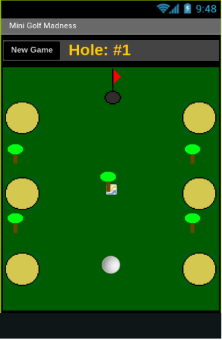
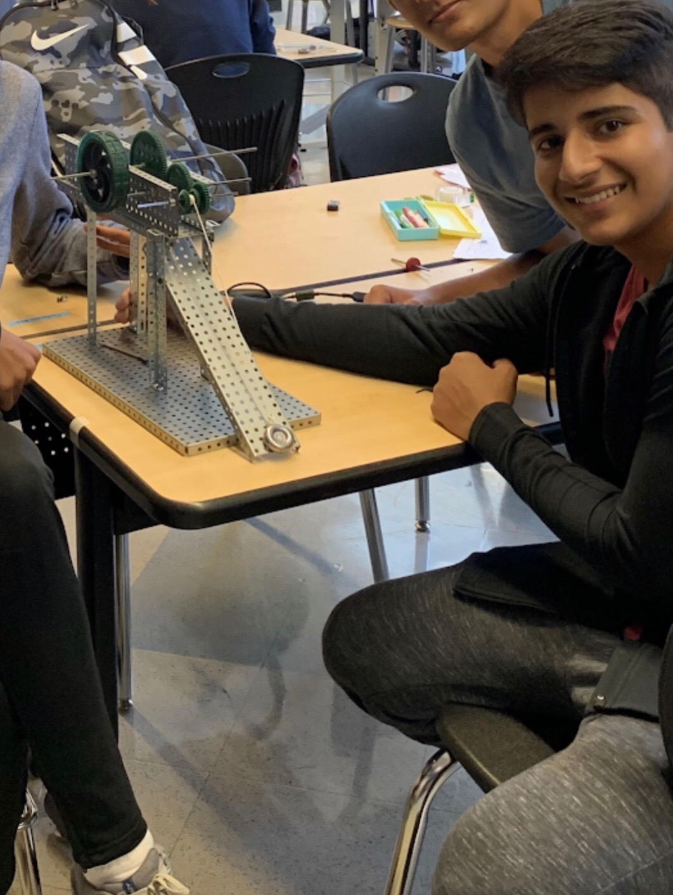
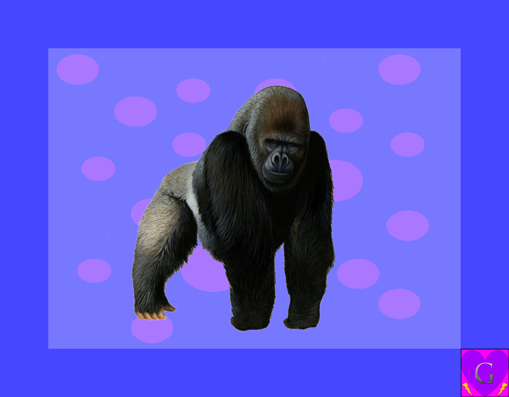
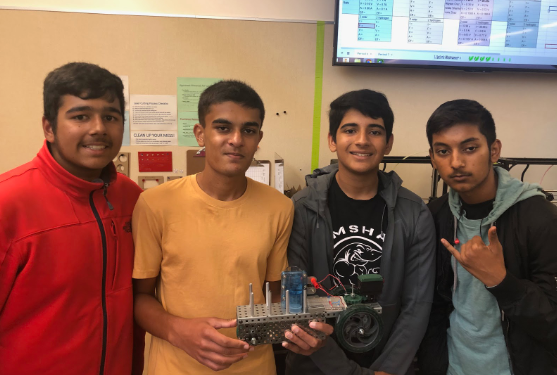

App Inventor Project
September 18 2018 - October 11 2018, Computer Science Principles
This project's objective was to make a creative spin-off based on a
prewritten tutorial on MIT App Inventor. My partner and I chose to use
the Mini Golf Tutorial
and add a whole lot of new features and improvements to make it our own. MIT App
Inventor is a program similar to Scratch for coding android apps, execept it is
more difficult and slightly buggy. Neverthless, as a team we overcame
these bugs and glitches, and ended up with a well designed Mini-Golf
Game that came complete with bunkers, trees, and rustic graphics. Along
with building the actual game, we had to leave comments on every chunk of
code and had to keep full documentation on an
online design notebook
This documentation includes brainstorms, feedback from other groups, our
game's beta versions, and individual daily logs. In this group project
I had the role as the designated leader. I was to make sure that work
was delegated fairly between us, that we stayed on task, and I was
the keeper of all documents. To be a succesful leader I had to be
patient, fair, confident, and responsible, all of which I did well at.
Also, this project taught me a lot about how coding and sensing works
on tablets/phones and it helped me improve my design skills.

Project Compound: The Infinity Slide
August 29, 2019 – September 11, 2019, 6th Period Honors Principles of Engineering
This project's objective was to design and build a scale prototype for the members of a compound that solves a stated problem
that we got to come up with. Our problem statement was the following: People who use playground slides are almost always subject to
walking back up to the top to use the slide again and are also subject to boring and generic playground slides.
This ultimately makes the playground slide much more boring and tiresome as it isn’t able to meet the standards of people in this day and age.
We also had to keep strict documentation, which you can access
here.
For this project, I was the group leader along with being a builder and helping on documentation. I specifically built the
inclined plane and pulley system and on the documentation I helped with overall neatness, the design brief, and the design proposal.
I faced several challenges while building: stripped screws, incorrect placements of parts, and bad planning. Hovewer,
I did not let these obstacles get in my way and I worked overtime to get my work done. Additionally, as group leader I
made sure communication was common and appropriate along with making sure everybody pulled their own weight, including myself.

Python Image Manipulation Project
March 4 2019 - March 25 2019, Computer Science Principles
This project's objective was to pick a client who has specific requests
for manipulatons that they want done to several images, and to use Python to code a
program that meets all their criteria and requests for how and what manipulatons they want done.
My partner and I chose Client #1
(see Client #1's criteria)
and we used our knowledge of Python and its imaging libraries to code
a human-interactive program that can preform manipulations such
as backgrounds, borders, logos, and more all while allowing the user to choose
how they want things to be done. We also had to keep strict documentation,
which you can access
here.
For this project, I was the designated
group leader and was in charge of most of the coding, planning, and
organization. My partner provided lots of help with brainstorming and documentation, and we worked well as a group.
Through this project, I learned that sometimes it is better to make simpler things
that work perfectly, rather than to get ahead of yourself and make awesome things that work poorly.
I saw many people try to code things very advanced that did not work out well and ended up costing
them a lot. That's why I chose to focus on coding things I knew were moderately advanced, but still
achievable within my timeframe. That way, I was able to make sure that every feature I implemented was
perfect and contained no missing links. While working on this, we faced several bumps in the road, but
as group leader I helped us get through them with as little trouble as possible. There were many times
when code was not working and we were struggling, but I solved this by getting organized, getting help
from others, or changing directions and working on another aspect of the project. Also, as leader
I made sure to let my partner get a say in every decision that we made and I made sure we kept
constant communication.

Solar-Hydrogen Alternative Energy Vehicle
October 31, 2019 – November 18, 2019, 6th Period Honors Principles of Engineering
This project's objective was to design, create and test prototypes that used
different configurations of solar cells and hydrogen fuel cells as power sources.
Then, using those prototypes we gathered information about different energy source
combinations to recommend for optimal power generation. We did this because
the gas we use to fuel cars is causing too much pollution, costs too much money,
and is a non-renewable resource that we must preserve for as long as possible. Additionally,
we were constrained to using a breadboard, wiring, vex-parts, and the rest of the items specified
on our equipment list.
We also kept very strict logs
and documentation
throughout our design process. For this project, I was the group leader and I managed communication among all team members.
I created our team group chat where we all discussed our work on a daily basis, and I made sure everybody was contributing their
fair share to the project. My other jobs consisted of building the first model of the car, recording data while testing,
staying after class to fix mechanical issues, and typing up the design brief.